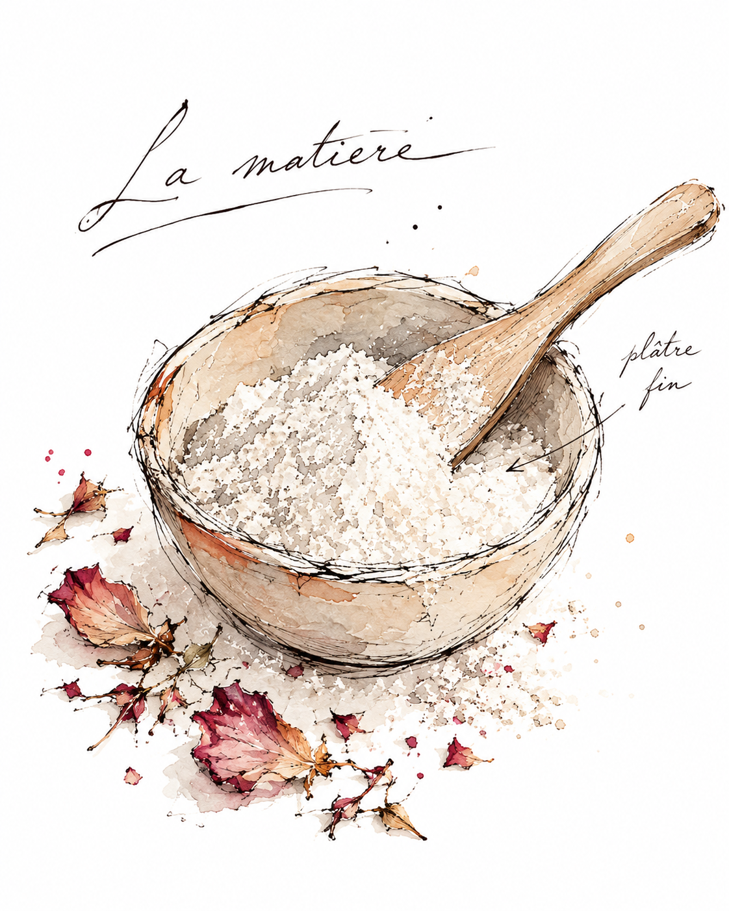
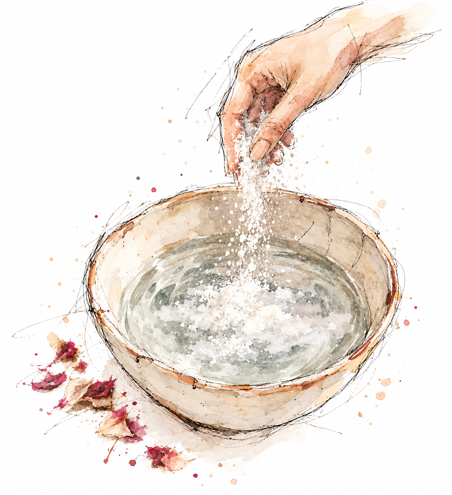
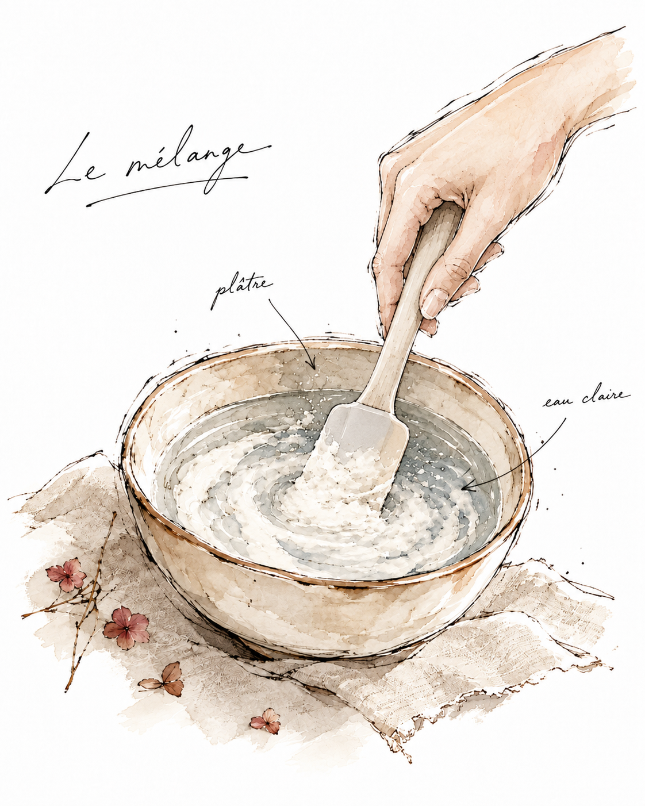
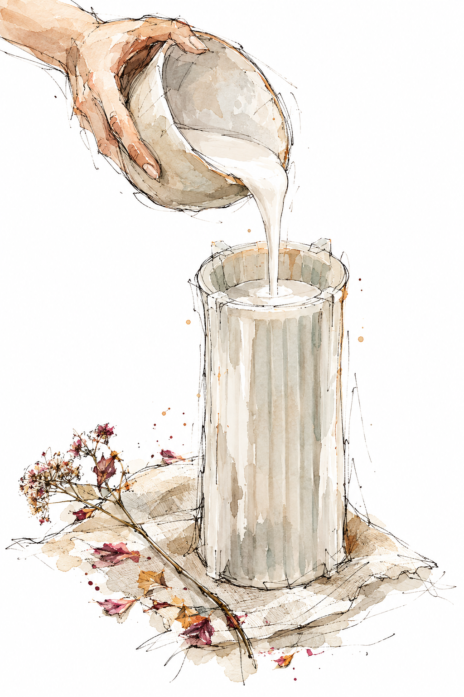
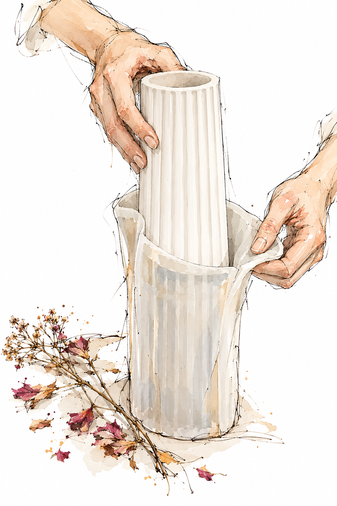
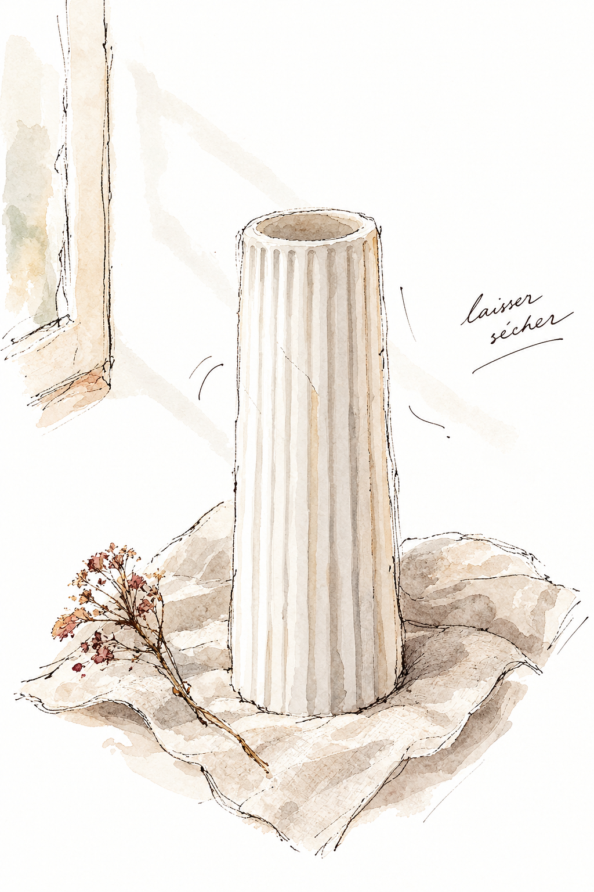
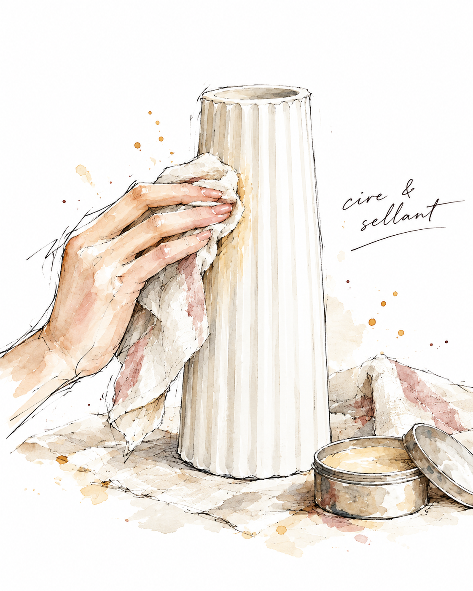

La Stèle naît d'un geste simple, répété avec attention. Pas de tour, pas de feu : juste du plâtre, de l'eau, un moule en silicone et les mains. Ce que je vous raconte ici, c'est le chemin exact que prend chaque vase avant d'arriver chez vous.
La Stele nasce da un gesto semplice, ripetuto con attenzione. Niente tornio, niente fuoco : solo gesso, acqua, uno stampo in silicone e le mani. Quello che vi racconto qui è il percorso esatto che compie ogni vaso prima di arrivare da voi.
La matière
La materia
Tout commence par la poudre. Du plâtre fin, blanc, légèrement calcaire au toucher, une matière minérale qui a quelque chose d'archaïque et de vivant à la fois. Je la conserve à l'abri de l'humidité, dans un endroit sec. C'est une matière capricieuse : elle réagit à l'air, à la chaleur, à la proportion d'eau. La connaître, c'est une affaire de patience.
Tutto comincia dalla polvere. Gesso fine, bianco, leggermente calcareo al tatto, una materia minerale che ha qualcosa di arcaico e di vivo allo stesso tempo. Lo conservo al riparo dall'umidità, in un luogo asciutto. È una materia capricciosa: reagisce all'aria, al calore, alla proporzione d'acqua. Conoscerla è una questione di pazienza.

Le mélange
L'impasto
On verse toujours le plâtre dans l'eau, jamais l'inverse. Je saupoudre doucement la poudre sur la surface de l'eau claire, et j'attends. Le plâtre s'enfonce progressivement, sature. Quand il n'absorbe plus, je commence à mélanger, lentement, sans incorporer d'air, du fond vers la surface. La consistance recherchée est celle d'une crème épaisse, fluide mais pas liquide, un peu comme un yaourt.
Si versa sempre il gesso nell'acqua, mai il contrario. Verso a pioggia la polvere sulla superficie dell'acqua fresca, e aspetto. Il gesso affonda progressivamente, satura. Quando non ne assorbe più, comincio a mescolare, lentamente, senza incorporare aria, dal fondo verso la superficie. La consistenza cercata è quella di una crema densa, fluida ma non liquida, un po' come uno yogurt.


Le coulage
La colata
C'est le moment que je préfère. Je verse le mélange dans le moule en silicone : un moule côtelé, haut, qui donnera à la Stèle sa ligne verticale et côtelée. Le plâtre coule doucement, remplit chaque nervure. Je tape légèrement le moule sur la table pour chasser les bulles d'air. Et ensuite, j'attends.
Verso il composto nello stampo in silicone : uno stampo costolato, alto, che darà alla Stele la sua linea verticale e costolata. Il gesso scorre dolcemente, riempie ogni costola. Batto leggermente lo stampo sul tavolo per eliminare le bolle d'aria. E poi aspetto.

Le démoulage
La sformatura
Pour un vase aux dimensions de la Stèle, il faut compter quelques heures avant que le plâtre prenne. La réaction chimique dégage une légère chaleur : c'est le signal. J'attends que l'objet soit complètement froid, puis je démoule le vase en roulant délicatement les bords du moule le long de ses parois. Il apparaît, encore légèrement humide, d'un blanc mat presque lumineux.
È il momento più soddisfacente, quello che preferisco. Considerate le dimensioni del vaso Stele, qualche ora è necessaria, prima che il gesso prenda. La reazione chimica sprigiona un leggero calore : è il segnale. Aspetto che l'oggetto sia completamente freddo e sformo il vaso arrotolando delicatamente i bordi dello stampo lungo le sue pareti. Appare, ancora leggermente umido, di un bianco opaco quasi luminoso.

Le séchage
L'asciugatura
Le vase a besoin de temps. Je le pose sur un linge en lin, près de la fenêtre, et je le laisse sécher au moins 3 jours. C'est une étape qu'on ne peut pas brusquer. Le plâtre qui sèche trop vite peut se fissurer. La lenteur ici n'est pas une contrainte, c'est une condition.
Il vaso ha bisogno di tempo per asciugare. Lo sistemo su un panno di lino, vicino alla finestra, e lo lascio asciugare almeno 3 giorni. È una fase che non si può affrettare. Il gesso che asciuga troppo in fretta può incrinarsi. La lentezza qui non è un vincolo, è una condizione.

Les finitions
Le finiture
Une fois sec, je ponce légèrement la base si nécessaire, puis j'applique un sellant qui protège le plâtre de l'humidité ambiante. Je termine par une cire naturelle, passée au chiffon doux, qui révèle le grain et donne à la surface ce toucher soyeux que l'on reconnaît aussitôt.
Una volta asciutto, levigo leggermente la base se necessario, poi applico un sigillante che protegge il gesso dall'umidità ambientale. Termino con una cera naturale, passata con un panno morbido, che rivela la grana e dona alla superficie quella morbidezza setosa che si riconosce subito al tatto.

La Stèle n'est pas faite pour l'eau. Même protégée, le plâtre reste une matière vivante qui n'aime pas l'humidité prolongée. Elle est faite pour les fleurs séchées, les branches, une tige solitaire. Pour décorer, simplement. Et pour durer, si on en prend soin.
La Stele non è fatta per l'acqua. Anche protetto, il gesso rimane una materia viva che non ama l'umidità prolungata. È fatta per i fiori secchi, i rami, uno stelo solitario. Per decorare, semplicemente. E per durare, se trattata con cura.